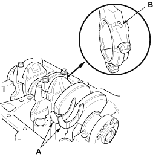
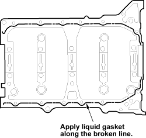

- Install the bearing halves in the cylinder block and connecting rods.
- Apply a coat of engine oil to the main bearings and rod bearings.
- Hold the crankshaft so rod journal No. 2 and rod journal No. 3 are straight up, and lower the crankshaft into the block.
- Install the thrust washers (A) in the No. 4 journal of the cylinder block.

- Apply engine oil to the threads of the connecting rod bolts.
- Seat the rod journals into connecting rod No. 1 and connecting rod No. 4. Line up the mark (B) on the connecting rod and cap, then install the caps and bolts finger-tight.
- Rotate the crankshaft clockwise, and seat the journals into connecting rod No. 2 and connecting rod No. 3. Line up the mark on the connecting rod and cap, then install the caps and bolts finger-tight.

- Tighten the connecting rod bolts to 29 Nm (3.0 kgf/m, 22 lbf/ft).
- Tighten the connecting rod bolts an additional 90
°.
- Remove old liquid gasket from the lower block mating surfaces, bolts and bolt holes.
- Clean and dry the lower block mating surfaces.
- Apply liquid gasket, P/N 08C70-K0234M, 08C70-K0334M or 08C70-X0331S, evenly to the cylinder block mating surface of the lower block and to the inner threads of the bolt holes.
NOTE: Do not install the parts if 5 minutes or more have elapsed since applying liquid gasket. Instead, reapply liquid gasket after removing old residue.
